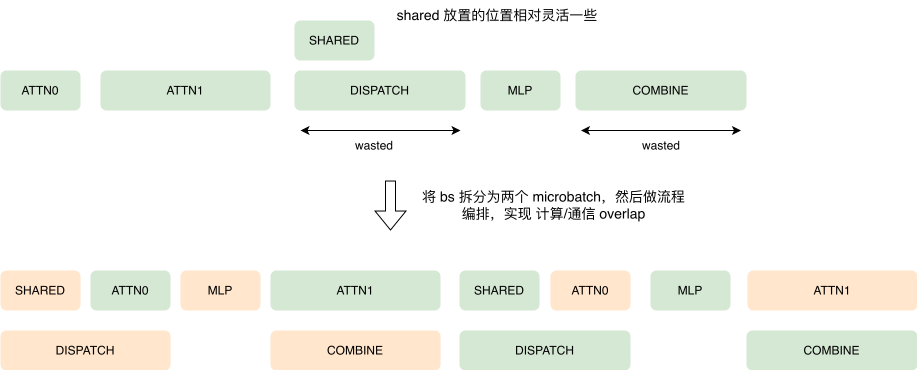
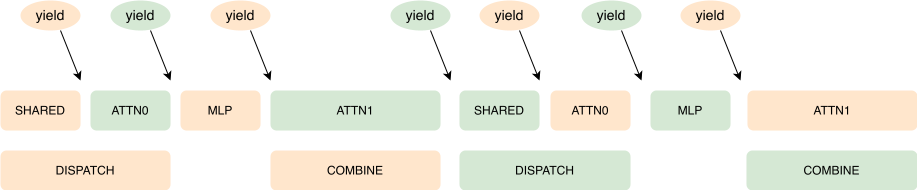
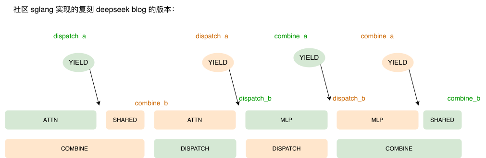

何时有收益
双流有优势和劣势，只有当 优势 > 劣势的时候才有收益
- 优势：dispatch 和 combine 被计算 overlap 掉的时间
- 劣势：计算会裂化
引擎建模
Yield
yield 在这里的语义是 “让权”，如果一个 microbatch 执行 yield，就表示可以让另一个 microbatch 执行了。
以 deepseek 的 decode 阶段多机的 overlap 为例，我们可以在下图中设置 “让权点”：

通过这种方式可以巧妙地实现通用的双流框架，大家可以观察到：
- 两个 microbatch 的编排流程是完全一致的，可以使用一个 变量 来表示两者的交错方式
- 对于通信流，dispatch 和 combine
都是使用异步的调用方式，每次当我们在一个 microbatch 中
launch 完当前阶段所有需要的 kernel 之后
即可 让权给 另一个 microbatch
- 这样可以在单流中实现双流的逻辑，通过异步的 dispatch/combine 实现通信流
return OperationsStrategy(
deep_gemm_num_sms=None,
tbo_delta_stages=2,
operations=[
attn0,
Yield,
attn1,
Yield,
dispatch_a,
shared,
Yield,
dispatch_b,
mlp,
combine_a,
Yield,
combine_b,
Yield,
],
)在看一下 DeepSeek prefill 阶段的多机 TBO：

return OperationsStrategy(
deep_gemm_num_sms=total_num_sms - DeepEPConfig.num_sms,
tbo_delta_stages=0,
operations=[
attn,
dispatch_a,
Yield,
dispatch_b,
mlp,
combine_a,
Yield,
shared,
combine_b,
],
)Normal 模式:
_a = 准备数据 + 打 event 标记
_b = 提交通信 + 等通信完成
Low-Latency 模式:
_a = 提交通信（直接调用 _dispatch_core/_combine_core）
_b = 等通信完成这两者其实不影响整体逻辑：通信 kernel 会在
_a 开始 launch，然后再 _b
等待结束，并且作为 计算流 和 通信流 的同步点。
假设有两个 microbatch A 和 B，在预填充阶段可能出现以下执行顺序：
A.combine_a → B.dispatch_a → A.combine_b → B.dispatch_b虽然 B.dispatch_b 出现在
A.combine_a 与 A.combine_b
之间，但这并不影响执行逻辑。因为 combine_a 和
dispatch_a 本质上是向同一个流提交 kernel
执行的事件，它们决定了 kernel
在流中的执行顺序。实际上，B.dispatch_b 必须等待
A.dispatch_b
完成后才能开始执行，因为同一个流中的内核必须严格按照提交顺序依次执行。
Workflow

Split
Overlapped Execution
def execute_overlapped_operations(inputs_arr, operations_arr, delta_stages):
executor_a = _StageExecutor("a", stages_a, inputs_a)
executor_b = _StageExecutor("b", stages_b, inputs_b)
# Phase 1: A 先行 delta_stages 步
for _ in range(delta_stages):
executor_a.next()
# Phase 2: 并行执行
for _ in range(executor_a.num_stages - delta_stages):
executor_a.next() # 异步执行 A 的下一个 stage
executor_b.next() # 异步执行 B 的下一个 stage
# Phase 3: B 完成
for _ in range(delta_stages):
executor_b.next()
return [executor_a.output, executor_b.output]